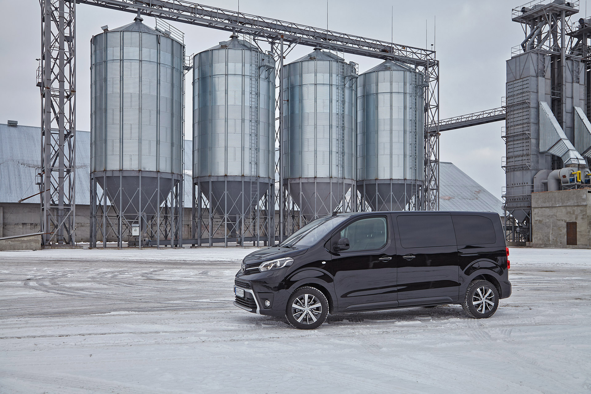
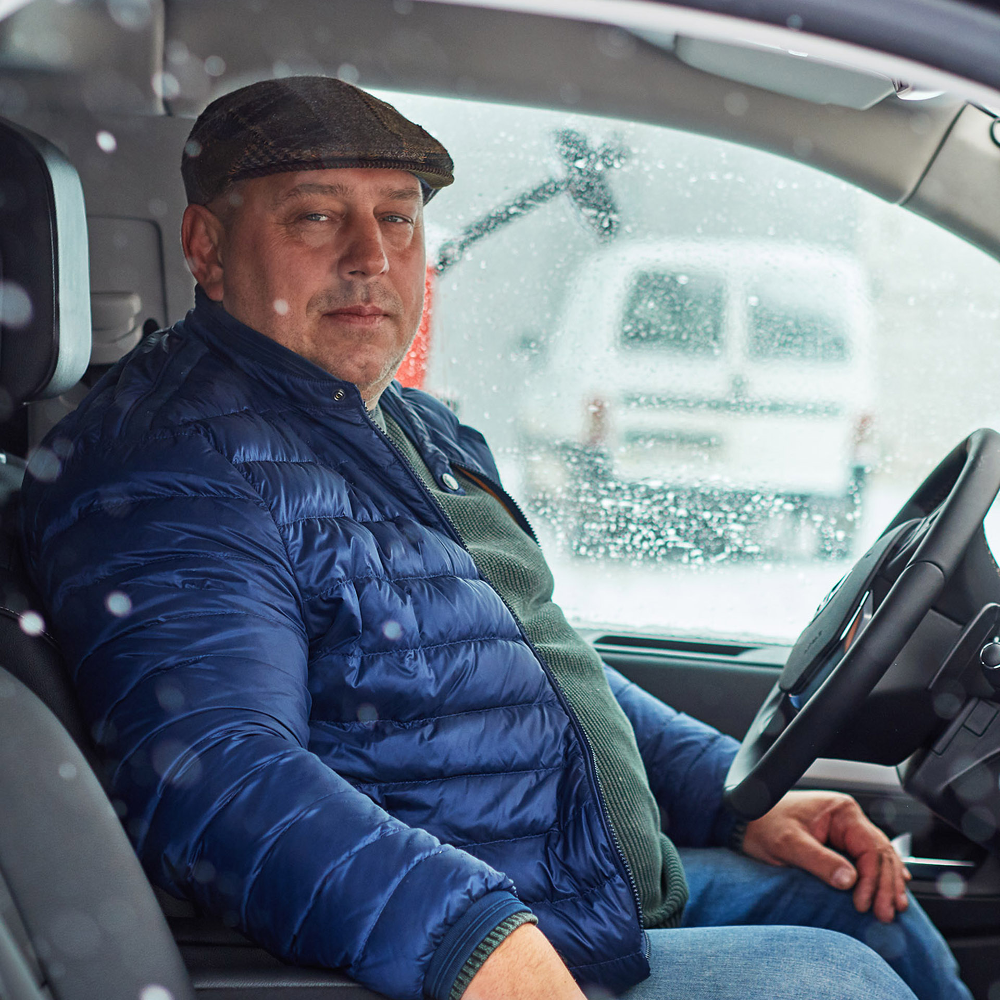
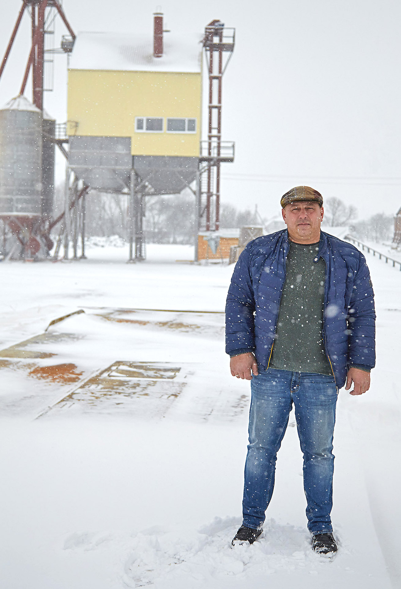

ПОЗАДУ 1240 КМ КИЇВСЬКИМИ ЗАТОРАМИ, ШВИДКІСНИМИ ЗАМІСЬКИМИ ТРАСАМИ, СІЛЬСЬКИМ БЕЗДОРІЖЖЯМ, СНІГОВИМИ ЗАМЕТАМИ. КОМАНДА LANDLORD ТА УКРАЇНСЬКІ ФЕРМЕРИ ТРИ ДНІ ТЕСТУВАЛИ ФУРГОН TOYOTA
ТЕКСТ: ДМИТРО ЧАБАН, ДАР’Я ГЕРМАН, МИХАЙЛО ДИКАЛЕНКО
Довгий час ми не асоціювали марку Toyota з комерційними фургонами. Нова модель повинна зламати стереотип. І цілком можливо, знайти себе і в аграрному бізнесі. До господарств вирушаємо на преміальній версії Toyota Proace Verso вартістю трохи понад 1,5 млн гривень. Цей автомобіль легко може виконувати функції як сімейного авто, так і офісу на колесах.
У нас не виникло нарікань до шестишвидкісної АКП, яка обов’язково використовується на преміальної версії. Незалежно від коробки передач усі Toyota Proace Verso оснащуються 2-літровими турбодизельними двигунами. Двигун порадував витратою пального. Після пробігу в 1240 км, який включав київські затори, швидкісні заміські траси і снігові замети, маршрутний комп’ютер намалював цілком привабливу цифру 8,2 л на 100 км.
По рівному асфальті на машині при ємно їхати швидко, у глибокому снігу і на слизькій дорозі деколи доводиться буксувати. Але з дорожнім просвітом 175 мм і захи стом моторного відсіку ми досить сміливо штурмуємо снігові тороси навіть на передньому приводі. А нагородою нам стають зустрічі з цікавими людьми та їх оцінка Toyota Proace Verso.
1,5
вартість преміальної версії
8,2
витрата палива на 100 км
2
турбодизельний двигун
ДЕНЬ 1:
ПРИВАТНЕ ПІДПРИЄМСТВО «МАКАРІВ-АГРОБУД»
Чи може сiмейний фургон стати у пригоді родинному бізнесу?
Дорога до господарства «Макарів-Агробуд», яким керує Ігор Чумак, виявилася нескладною — під колеса Toyota Proace Verso стелиться переважно рівний асфальт. Фургон впевнено почувається на дорозі, лише злегка похитуючись у момент обгону фур.
Співвласник і керівник господарства «Макарів-Агробуд» Ігор Чумак
Господар, який зустрів нас на майданчику, де розмістився зерносушильний комплекс підприємства, дещо розгубився з визначенням своєї посади. «Макарів-Агробуд», співвласником якого є Чумак, обробляє 6000 га і є частиною великого родинного бізнесу. До нього входять ще кластер у Миколаївській області з площею 18 000 га і підприємство з 2000 га у Черкаській області. Останнє спеціалізується на скотарстві.
Тут, поблизу Макарова, основний напрям — вирощування кукурудзи, пшениці, сої та соняшника. А гордістю підприємства зараз став новий комплекс із приймання і сушіння зерна — він унікальний для України, адже працює на соломі. Господар одразу пропонує зробити «тур» територією комплексу та продовжити розмову в Toyota.
ФОТО: ОЛЕКСАНДР ЛАРИЧКІН
Поки ми змінюємо локацію, Чумак розповідає, що постійно за кермом з 2005-го, проїжджаючи на рік до 70 000 км, а останні сім років віддає перевагу кросоверам. «Специфіка роботи така, що часто доводиться їздити по бездоріжжю. Тому для мене важлива наявність повного приводу і гарного дорожнього просвіту», — зауважує він.
І розмова знову повертається до комплексу: була ідея зробити зерносушильний комплекс, який працює на альтернативному паливі, що є в рослинницькому господарстві, — соломі. Та виявилося, що на ринку такі сушарки ніхто не виробляє. Підприємство знайшло сушарки ще радянського періоду, які у вигляді металобрухту були у Кропивницькому та Хмельницькому, перевезло до Макарівського району і повністю відновило.
Справа того варта: коли комплекс буде повністю добудований, тонна зберігання зерна коштуватиме $80, що у три-чотири рази дешевше, ніж у існуючих комплексах.
«У Toyota Proace Verso дуже легкі посадка і висадка, це додає комфорту»
Покружлявши територією, виїжджаємо подивитися угіддя «Макарів-Агробуду». Та поля сплять під снігом, і дорогою Чумак ділиться враженнями від автівки. Відразу видно, що керування машиною не викликає у нього жодних труднощів. Треба лише звикнути до габаритів, до того, що капот дуже короткий, а ззаду довгий кузов. І з огляду на це будувати траєкторію. В управлінні автомобіль легкий і податливий. «У цій машині дуже легкі посадка і висадка, це додає комфорту. На невисоких оборотах мотор не відгукується відразу після натискання педалі. Але на авто такого класу і не потрібно форсувати події», — каже Чумак. Для спокійної їзди 2-літровий мотор — підходящий варіант, додає він, а оптимальна витрата палива не повинна в результаті перевищувати 7 л на сотню кілометрів.

І дійсно, для цієї машини з автоматичною коробкою передач виробник якраз і заявляє показники від 5,6 до 7 л.
Економічність — один з факторів, чому Чумак вважає за краще дизельні мотори. «Займаючись агробізнесом, я купую дизель за гуртовими цінами. І для мене це домінуючий фактор. Для інженерів і людей, які виїжджають у поле, ми теж вибираємо авто тільки з дизельними двигунами», — розповідає піприємець.
Такий практичний підхід у господаря і до бізнесу — на його переконання, сільгоспвиробник повинен працювати виключно на «своїх грошах», не залучаючи кредитні кошти. Тому вся техніка у підприємстві — придбані за кордоном вживані Case, LEMKEN, John Deere, Horsch тощо. Можливо, це вже досвід, можливо, накладає відбиток те, що Чумак здобув освіту за спеціальністю «економіка підприємства» в Університеті Шевченка у 2004 році.
За його словами, самостійно продукцію «Макарів-Агробуд» не експортує: для цього треба мати штат логістів. Тому компанія співпрацює з великими трейдерами — Toepfer («АДМ Трединг»), Bunge, була спроба працювати з ДПЗКУ. Практично вирішене і питання постачальника насіння, засобів захисту рослин і добрив — вже близько семи років «Макарів-Агробуд» працює виключно з компанією «Ерідон». «Вони розуміють наші потреби, знімають додатковий обсяг організаційних питань, допомагають вирішувати логістичні проблеми...» — перераховує плюси Чумак. За його словами, попри пропозиції інших компаній «Макарів-Агробуд» міняти партнера не збирається, бо ця співпраця перевірена часом. За співвідношенням ціни та якості послуги, які надає «Ерідон», на думку підприємця, найкращі на ринку.
«Як службовий транспорт, для відрядження я б однозначно розглядав Toyota»
Те саме співвідношення ціни та якості цінує Чумак і у бренді Toyota. «Можливо, тут немає wow-ефекту та особливого оздоблення, але ж Toyota Proace Verso практично вдвічі дешевший за німецькі аналоги у дорогих комплектаціях. Таку машину вибираєш тоді, коли потрібен великий салон і багато місць — як альтернатива офісу на колесах або щоб подорожувати великою родиною. Як службовий транспорт, для виїздів топ-менеджерів, для відрядження я б однозначно розглядав Toyota», — виносить свій вердикт господар після прогулянки околицями декількох сіл поблизу Макарова.
ДЕНЬ 2:
ПРИВАТНЕ ПІДПРИЄМСТВО «ЖЕРМ»
Випробовування негодою: маневреність фургона TOYOTA PROACE VERSO
На другий день поїздка супроводжувалася рясним снігопадом. Підігріви лобового скла в зоні спокою щіток склоочисників і заднього скла працюють не вимикаючись. Час від часу на панелі починає блимати лампочка спрацьовування системи стабілізації або протибуксування.

Власник господарства «Жерм» Руслан Трояченко
Ми попрямували до Житомира до приватного господарства «Жерм», де нас зустрів власник Руслан Трояченко. Сівши за кермо Toyota Proace Verso, господар продовжив поїздку до власного підприєм ства, розташованого за 40 км від міста, у селі Очеретянка Черняхівського району.
Дорогою дізнаємося, що Трояченко змінив кілька років тому легкову Toyota Camry на позашляховик Land Cruiser 200. «За майже п’ять років я вже проїхав на ньому 350 000 км. Не думаю, що інший автомобіль стільки б витримав такими шляхми. Жодного разу не було такого, щоб десь поламався або зупинився. Тому на сервіс заїжджаю тільки на планове ТО і для заміни витратних деталей», — розповідає підприємець. Останні 15 років він їздить виключно на нових машинах і дев’ять років — на Toyota.
«Тут дуже зручна посадка. Мені не треба звикати до габаритів, дискомфорту не відчуваю»
За його словами, автомобілі Toyota практичні, надійні та повністю виконують свої функції. «Для мене авто — це передусім засіб пересування, і при виборі я в першу чергу звертаю увагу на комфорт, адже більшу частину часу проводжу саме в машині. Потім — швидкість руху, — ділиться Трояченко. — І звичайно, я повинен бути впевнений в автомобілі. Вважаю Toyota однією з найнадійніших машин».
За кермом власник господарства «Жерм» вже 30 років. І хоча фургоном він керує вперше, їде дуже впевнено. «Для мене немає різниці, на чому їхати. І ця Toyota мене повністю задовольняє. Тут висока і дужезручна посадка. Мені не треба звикати до габаритів, жодного дискомфорту не відчуваю», — зауважує він.
Дорогою розповідає, що у господарства «Жерм» в обробітку до 5000 га землі. Основні культури для вирощування — картопля, соняшник, кукурудза, ріпак, жито, пшениця, соя та гречка. Окрім цього, підприємство займається свинарством. Три роки тому тут звели ферму на 600 голів, цьогоріч у планах збудувати маточник на 140 голів, що дозволить отримувати приплід до 3000 свиней. Також у господарстві розводять овець німецької породи Меріноландшаф, наразі маточного поголів’я тут 300 голів.
Розпочав свою господарську кар’єру Трояченко у 2010-му з вирощування картоплі на 50 га. У 2011–2012 роках земельний банк зріс до 250 га. Керівник зізнається, що розпочинав кар’єру без додаткового фінансування. Своїм помічником ще на початку діяльності обрав компанію «Ерідон», що надає якісне насіння, засоби захисту рослин. «На одній з перших зустрічей із представником «Ерідон» одразу зрозумів: буду співпрацювати з цією компанією, — пригадує Трояченко. — Так триває вже з 2010 року».

«Я повинен бути впевнений в автомобілі. Вважаю Toyota однією з найнадійніших машин»
Приїхавши до господарства, підприємець ділиться враженнями про автомобіль і зазначає, що Toyota Proace Verso розглянув би як службове авто. «Якраз останнім часом виникла необхідність у машині, що може перевозити велику кількість юдей, — розповідає Трояченко. — Toyota мене влаштовує за співвідношенням ціни, якості та комплектації. Ця машина може використовуватися і для службових поїздок, і слугувати кабінетом на колесах».
В Україні Toyota Proace Verso пропонується тільки з одним мотором — 2-літровим турбодизелем потужністю 150 к. с. і крутним моментом 370 Нм. Більш ніж за 1200 км пробігу наша витрата палива становила менше 8,5 л на 100 км. Почувши цифри, Трояченко зауважує, що це відмінна альтернатива німецьким конкурентам: «Мені подобаються більше агресивні автомобілі, але це сімейна або службова машина, і потужності для неї цілком достатньо».
Підприємець надає перевагу не тільки новим автівкам, а й новій техніці для свого господарства. Безперечним фаворитом для нього є агрегати John Deere. «Ще чотири роки тому ми прийняли рішення купувати виключно нову техніку. Нам потрібна техніка, що працюватиме, а не стоятиме на ремонті», — наголошує він.
Власний підхід у керівника і до підбору команди. «Працівників я намагаюся знаходити ще на другому-третьому курсі аграрних вишів і вчити їх з нуля на практиці», — каже він. Сьогодні на посадах головного агронома та головного інженера у господарстві працюють спеціалісти віком 25 років.
ДЕНЬ 3:
ПРИВАТНЕ СІЛЬСЬКОГОСПОДАРСЬКЕ ПІДПРИЄМСТВО «БАТЬКІВЩИНА»
Офіс на колесах: фургон TOYOTA як службове авто
Вирушаючи до господарства «Батьківщина», ми побоювалися застрягнути в дорозі, адже ще відчувалися наслідки сильних опадів. Та острахи виявилися марними. Зате наш фургон часом жорстко стрясало на вибоїнах, тріщинах і грубих льодових брилах.
Власник господарства Володимир Семенюк зустрів нас біля офісу та пересів за кермо Toyota Proace Verso, аби показати свої угіддя.
Він одразу розповідає, що на підприємстві для виїздів у поля використовують тільки Toyota Land Cruiser 200 і Prado. «Ми спробували використовувати авто інших марок, але не були задоволені», — ділиться Семенюк. Автомобілі Toyota
експлуатують у господарстві вже п’ять років без жодних нарікань, і власник вважає їх кращими для полів. Підприємство має у своєму підпорядкуванні 3000 га землі у Житомирській області, вирощує кукурудзу, озимий ріпак та озиму пшеницю, сою, соняшник. Також займається тваринництвом — у господарстві близько 750 голів великої рогатої худоби.
Поки ми їдемо до тракторної бригади, Семенюк розповідає, що за кермом він з 2000 року і вже має досвід керування фургоном. Хоча в повсякденному житті та на далекі відстані вважає за краще їздити на престижному позашляховику. «Машина велика і вимагає звички, iншої траєкторії. Але відчуття від посадки, керованості, роботи підвіски цього авто у мене найпозитивніші, — коментує Toyota Proace Verso підприємець. — Люблю, щоб був запас потужності. Але вважаю за краще дизельні мотори через їх економічність. Цей фургон розганяється до сотні за 12,2 секунди, що дуже непогано».
Власник господарства «Батьківщина» Володимир Семенюк
Завжди ретельно вивчає керівник і характеристики важкої техніки. Свого часу придбання нової сільгосптехніки стало
переломним моментом. Власник згадує, що працювати у цьому
регіоні його запросив товариш. До Житомирської області
Семенюк приїхав у 2005 році. «На той момент підприємство мало 1500 га в обробітку. Уся техніка була ще з радянських часів, — пояснює господар. — Ми взяли кредит у банку та одразу придбали імпортну техніку. Першу посівну з нею провели у 2007 році, і врожайність зросла в рази».
Не останню роль у підвищенні врожайності господарства
зіграла компанія «Ерідон», з якою Семенюк співпрацює більше п’яти років. «Бувало, звертаєшся до компанії з терміновою
проблемою, і моментально допомагали вирішувати — привозили необхідний препарат тощо», — ділиться він.
Екскурсія господарством підтверджує, що власник прискіпливо ставиться до вибору техніки. Так само прискіпливо він підходить і до вибору автомобіля. «Ми звикли до того, що Toyota — це
позашляховики, на яких можна ганяти по полю. А ось як фургон не розглядали. Надалі при виборі такої машини будемо
враховувати і цю марку», — резюмує Семенюк.